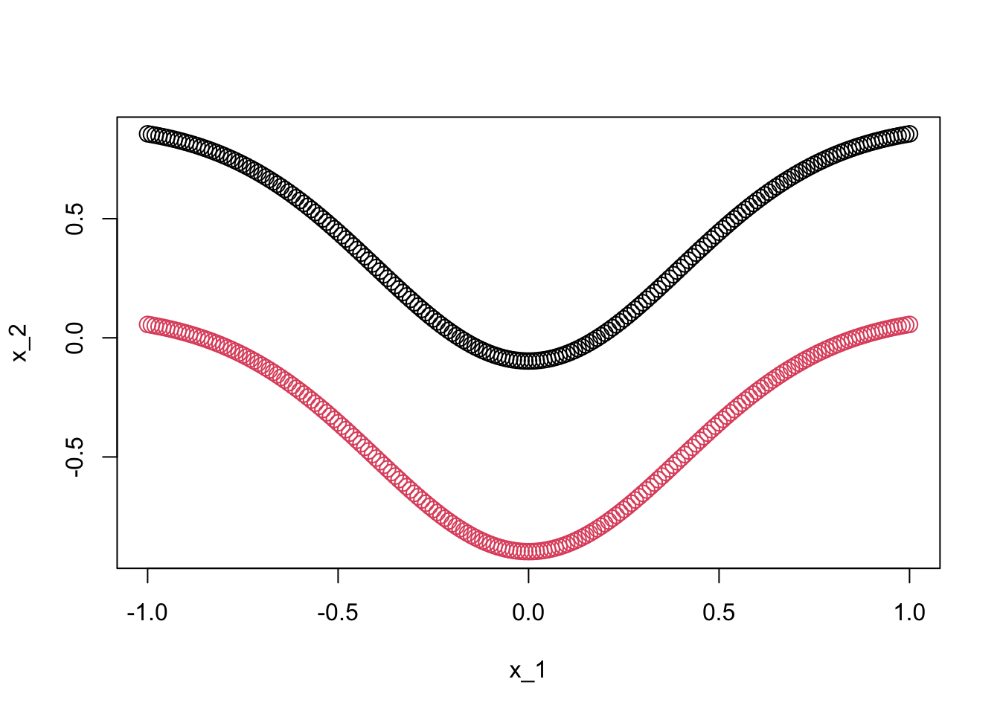

In the previous lecture notes, we mentioned some special techniques in deep learning, such as pretrained models, fine-tuning, and transfer learning. Understanding these concepts with a large dataset is neither convenient nor time-efficient. Therefore, in this exercise, we will use a toy dataset to learn how to implement these ideas using some advanced features in Keras. You can use the following chunk of code to obtain the data. The final training samples are x and y, where y is the target variable.
t =seq(-1,1,0.01)t1 =0.1-dnorm(t,0,0.4)t2 =0.9-dnorm(t,0,0.4)# generate the final training samplex =rbind(cbind(t,t1), cbind(t,t2))colnames(x) =c("x_1", "x_2")y =c(rep(1,length(t1)), rep(0,length(t2)))plot(x, col = y +1, pch =21, cex =1.5)

Task 4.1: ANN
Here, you need to train a neural network model with a hidden layer containing two neurons to distinguish between red and black points. Most likely, you will get stuck at around 84% accuracy, but if you’re lucky, you might train a classifier that achieves 100% accuracy. If you are not lucky enough, no worries but just go ahead.
Task 4.2: Better initialization
Suppose you use a large but unlabeled dataset to perform some pretraining with unsupervised learning, thereby obtaining a set of well-initialized neuron parameters. Next, we will use these pretrained parameters as the initial values for training. The following code can help you set the initial values for the model.
# get a copy of model parametersann_weights_ini =get_weights(ann_mod)# change the values ann_weights_ini[[1]] =matrix(c(5,18,-8,16), byrow = T, 2,2)ann_weights_ini[[2]] =array(c(-3,8))ann_weights_ini[[3]] =matrix(c(0,0),2,1)ann_weights_ini[[4]] =array(0)# set model parametersann_mod$set_weights(ann_weights_ini)
Now you can compile the model and start training. You can use optimizer_sgd with a learning rate of 0.1. Most likely, you will quickly obtain a classifier with 100% accuracy. Compare the final coefficients you obtained, get_weights(ann_mod) with the initial coefficients, ann_weights_ini.
Task 4.3: Freezing and fine tuning
Next, we will manipulate the model coefficients obtained in section 4.2 using the following code.
pretrained_weight =get_weights(ann_mod)# change the values pretrained_weight[[3]] =matrix(c(1,1),2,1)pretrained_weight[[4]] =array(1)# set model parametersann_mod$set_weights(pretrained_weight)
Assuming that the current ann_mod is a pretrained model obtained using some method, we will now try freezing the hidden layer coefficients and perform fine-tuning on the parameters of the second layer. To do this, you can set the trainable attribute of the first layer in ann_mod to FALSE. This will lock the parameters of the first layer, meaning that during model training, the optimization algorithm will not change the values of the first layer’s parameters. After this, you can proceed with fine-tuning the second layer parameters while keeping the first layer’s parameters fixed.
ann_mod$layers[[1]]$trainable <-FALSE
After training, compare the final model coefficients with those of the pretrained model to observe any changes, and note the differences from Task 4.2.
Task 4.5: Transfer learning
We can also treat the pretrained model from Task 4.3 as a model trained for a similar problem and apply transfer learning. There are many ways to implement transfer learning, and one of the most straightforward methods is to use the trained model as a feature extractor to extract features, and then directly train a classifier with our data. This approach is particularly useful when the working dataset is small. By leveraging the pretrained model as a feature extractor, you can transfer knowledge from a larger dataset (on which the model was originally trained) to your smaller dataset, which helps improve the performance of the classifier even with limited data. You can implement this idea by the following code.
Next, let’s visualize and compare the original feature space with the feature space formed by extracting features through the pretrained model.
par(mfrow =c(1,2))plot(x, col = y+1)plot(z, col = y+1)
Yes, I remember what we mentioned about the essence of deep learning — it’s end-to-end learning. In the process of obtaining a great classifier through a neural network model, we also acquire excellent feature extraction tools. The power of deep learning lies in its ability to automatically learn meaningful representations from raw data, eliminating the need for manual feature engineering and enabling end-to-end learning, where both the feature extraction and the classification are learned together as part of the same model.
Alright, that’s all for the experiment questions. We have also reached the end of this brief journey! I hope you had a pleasant trip.